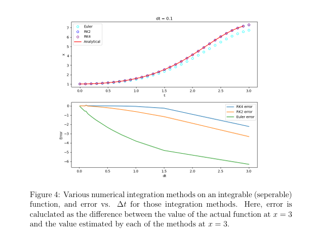
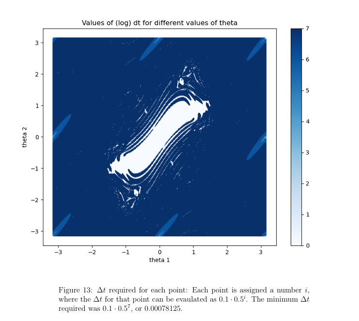
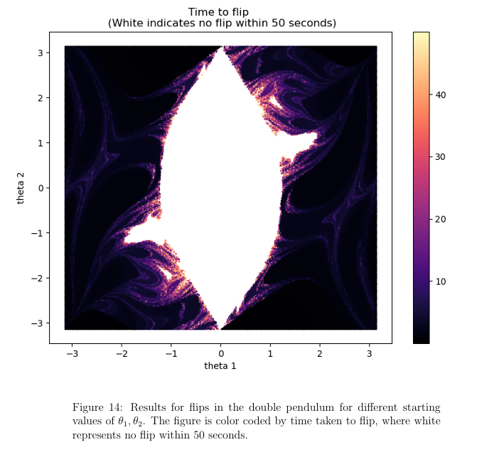

Double Pendulum Dynamics
Single-author research paper studying the chaotic properties of the double pendulum system, conducted in collaboration with Dr. Christian Hölbling from the University of Wuppertal, Germany.
Background
The double pendulum is a deceptively simple mechanical system — two pendulums attached end-to-end — that exhibits profoundly complex, chaotic behavior. Small differences in initial conditions lead to wildly divergent trajectories, making it a canonical example of deterministic chaos and a rich subject for computational study.
This project was undertaken as independent research under the mentorship of Dr. Christian Hölbling, a theoretical physicist at the University of Wuppertal. The work resulted in a single-author paper.
Research Goals
- Numerically simulate the double pendulum across a large space of initial conditions
- Characterize chaotic regions of phase space and identify sensitivity to initial conditions
- Apply multiple numerical integration methods and compare their accuracy and stability
- Leverage parallel computation to make large-scale simulation feasible
Methods & Tools
The simulation involved solving a system of coupled, nonlinear ordinary differential equations governing the motion of the double pendulum. Several numerical approaches were implemented and compared:
- Euler method integration
- Runge-Kutta 2nd-order integration (RK2)
- Runge-Kutta 4th-order integration (RK4)
To handle the computational load of sweeping over dense initial condition grids, the simulation was parallelized using CUDA for GPU acceleration, dramatically reducing runtime for high-resolution parameter sweeps.
Technologies
- Python (NumPy, SciPy, Matplotlib) for prototyping and visualization
- CUDA / C++ for GPU-accelerated parallel simulation
- Linear algebra and multi-dimensional ODE solvers
- LaTeX for the final paper writeup
Key Findings
The research produced high-resolution visualizations of the double pendulum's phase space, clearly delineating chaotic and quasi-periodic regions. The GPU-accelerated approach enabled grid sizes that would have been impractical on CPU alone, yielding finer detail in the boundary regions between ordered and chaotic motion.
Lyapunov exponent maps were computed across initial condition space, providing a quantitative measure of the local sensitivity to perturbations and connecting simulation results to theoretical predictions from chaos theory.
Mentorship
This project was conducted with guidance from Dr. Christian Hölbling, University of Wuppertal (Germany). The research was carried out independently, with Dr. Hölbling providing mentorship on theoretical framing and methodology.
Key Figures



Downloads
The abstract and full report are available below: